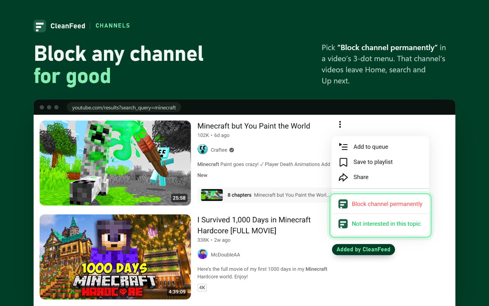

Channels
Block a channel from the 3-dot menu
Pick “Block channel permanently” in any video's 3-dot menu, or press “Block this channel” next to Subscribe. Its videos disappear at once.
- Hidden from Home, search, Up next, channel pages, playlists and Shorts shelves
- In the Shorts player, a blocked channel's Short is hidden and paused, so you don't hear it
- Also matched by @handle where YouTube shows it, which helps when a channel is renamed
- Unlimited on the free plan
